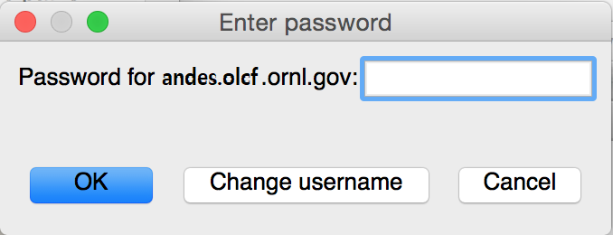
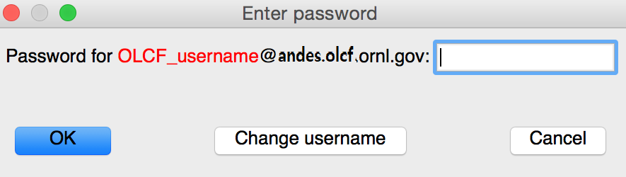

VisIt
Note
VisIt 3.4.1 is now available on Andes.
Overview
VisIt is an interactive, parallel analysis and visualization tool for scientific data. VisIt contains a rich set of visualization features so you can view your data in a variety of ways. It can be used to visualize scalar and vector fields defined on two- and three-dimensional (2D and 3D) structured and unstructured meshes. Further information regarding VisIt can be found at the links provided in the Additional Resources section.
Installing and Setting Up Visit
VisIt uses a client-server architecture. You will obtain the best performance by running the VisIt client on your local computer and running the server on OLCF resources. VisIt for your local computer can be obtained here: VisIt Installation.
Recommended VisIt versions on our systems:
Summit: VisIt 3.1.4
Andes: VisIt 3.3.3, 3.4.1
Frontier: VisIt 3.3.3 (via the UMS022 module)
Warning
Using a different version than what is listed above is not guaranteed to work properly.
For sample data and additional examples, explore the
VisIt Data Archive
and various VisIt Tutorials.
Supplementary test data can be found in your local installation in the data
directory:
Linux:
/path/to/visit/datamacOS:
/path/to/VisIt.app/Contents/Resources/dataWindows:
C:\path\to\LLNL\VisIt x.y.z\data
Additionally, check out our beginner friendly OLCF VisIt Tutorial which uses Andes to visualize example datasets.
Creating ORNL/OLCF Host Profiles
The first time you launch VisIt (after installing), you will be prompted for a remote host preference. Unfortunately, ORNL does not maintain that list often, so the ORNL entry may be outdated. Click the None option instead. Restart VisIt, and go to OptionsHost Profiles. Select New Host
For Andes:
Host nickname:
Andes(this is arbitrary)Remote hostname:
andes.olcf.ornl.gov(required)Host name aliases:
andes-login#g(required)Maximum Nodes: Unchecked
Maximum processors: Unchecked (arbitrary)
Path to VisIt Installation:
/sw/andes/visit(required)Username: Your OLCF Username (required)
Tunnel data connections through SSH: Checked (required)
Under the Launch Profiles tab create a launch profile. Most of these values are arbitrary
Profile Name:
batch(arbitrary)Timeout: 480 (arbitrary)
Number of threads per task: 0 (arbitrary, but not tested with OMP/pthread support)
Additional arguments: blank (arbitrary)
Under the Parallel Tab:
Launch parallel engine: Checked (required)
Launch Tab:
Parallel launch method:
sbatch/srun(required)Partition/Pool/Queue:
batch(required)Number of processors: 1 (arbitrary, but high number may lead to OOM errors) (max for
batchqueue is 32)Number of nodes: 1 (arbitrary)
Bank/Account: Your OLCF project to use (required)
Time Limit: 1:00:00 (arbitrary,
HH:MM:SS)Machine file: Unchecked (required Lets VisIt get the nodelist from the scheduler)
Constraints: Unchecked
Advanced tab All boxes unchecked
GPU Acceleration
Use clusters graphics cards: Unchecked (even if using the
gpupartition)
Click Apply and make sure to save the settings (Options/Save Settings). Exit and re-launch VisIt.
Note
Users with large datasets may see a slight performance boost by
using the high-memory gpu partition or by increasing
the number of processors if memory is not an issue. See the
Modifying Host Profiles section below for how to add a gpu partition
launch profile on Andes.
For Frontier:
Host nickname:
Frontier(this is arbitrary)Remote hostname:
frontier.olcf.ornl.gov(required)Host name aliases:
login#(required)Maximum Nodes: Unchecked
Maximum processors: Unchecked (arbitrary)
Path to VisIt Installation:
/sw/frontier/ums/ums022/linux-sles15-zen3/gcc-11.2.0/visit-3.3.3-zfoh2caq5tbshlvtujditymjizstvewe/(required)Username: Your OLCF Username (required)
Tunnel data connections through SSH: Checked (required)
Under the Launch Profiles tab create a launch profile. Most of these values are arbitrary
Profile Name:
batch(arbitrary)Timeout: 480 (arbitrary)
Number of threads per task: 0 (arbitrary, but not tested with OMP/pthread support)
Additional arguments: blank (arbitrary)
Under the Parallel Tab:
Launch parallel engine: Checked (required)
Launch Tab:
Parallel launch method:
sbatch/srun(required)Partition/Pool/Queue:
batch(required)Number of processors: 1 (arbitrary, but high number may lead to OOM errors) (max is 56)
Number of nodes: 1 (arbitrary)
Bank/Account: Your OLCF project to use (required)
Time Limit: 01:00:00 (arbitrary,
HH:MM:SS)Machine file: Unchecked (required Lets VisIt get the nodelist from the scheduler)
Constraints: Unchecked
Advanced tab All boxes unchecked
GPU Acceleration
Use clusters graphics cards: Unchecked
Click Apply and make sure to save the settings (Options/Save Settings). Exit and re-launch VisIt.
Note
If you want to use the debug QOS on Frontier, you can add -q debug
to the Launcher arguments section under the Advanced tab (make sure
to also check the Launcher arguments box).
For Summit:
Host nickname:
Summit(this is arbitrary)Remote hostname:
summit.olcf.ornl.gov(required)Host name aliases:
login#(required)Maximum Nodes: Unchecked
Maximum processors: Unchecked (arbitrary)
Path to VisIt Installation:
/sw/summit/visit(required)Username: Your OLCF Username (required)
Tunnel data connections through SSH: Checked (required)
Under the Launch Profiles tab create a launch profile. Most of these values are arbitrary
Profile Name:
batch(arbitrary)Timeout: 480 (arbitrary)
Number of threads per task: 0 (arbitrary, but not tested with OMP/pthread support)
Additional arguments: blank (arbitrary)
Under the Parallel Tab:
Launch parallel engine: Checked (required)
Launch Tab:
Parallel launch method:
bsub(required)Partition/Pool/Queue:
batch(required)Number of processors: 1 (arbitrary, but high number may lead to OOM errors) (max is 42)
Number of nodes: 1 (arbitrary)
Bank/Account: Your OLCF project to use (required)
Time Limit: 01:00 (arbitrary,
HH:MM)Machine file: Unchecked (required Lets VisIt get the nodelist from the scheduler)
Constraints: Unchecked
Advanced tab All boxes unchecked
GPU Acceleration
Use clusters graphics cards: Unchecked
Click Apply and make sure to save the settings (Options/Save Settings). Exit and re-launch VisIt.
Modifying Host Profiles
See Creating ORNL/OLCF Host Profiles section above for creating your initial host profile.
To make changes to an existing host profile, do the following:
Go to OptionsHost Profiles.
The window will display the known hosts on the left, with the settings for that host shown on the right in the Host Settings tab.
You can modify settings relevant to this host machine. For example, you can change the Username field if your OLCF username differs from your local computer username.
Once you have made your changes, press the Apply button, and then save the settings (Options/Save Settings).
Each host can have several launch profiles. A launch profile specifies how VisIt runs on a given host computer. To make changes to a hosts launch profile, do the following:
Go to OptionsHost Profiles.
Select the host in the left side of the window.
Select the Launch Profiles tab in the right side of the window. This will display the known launch profiles for this host.
Select a Launch Profile and the settings are displayed in the tabs below.
You can set your Project ID in the Default Bank/Account field in the Parallel tab.
You can change the queue used by modifying the Partition/Pool/Queue field in the Parallel tab.
Once you have made your changes, press the Apply button, and then save the settings (Options/Save Settings).
For example, this is how you would modify the Andes profile to use the gpu partition:
Under Andes Launch Profiles:
Click on New Profile
Name the profile something like gpu (arbitrary)
Click on Parallel
Check Launch Parallel Engine
Set Launch Method to
sbatch/srun(required)Set Partition/Pool/Queue to
gpu(required)Set default number of processors to 28 (max without hyperthreading) (arbitrary)
Set default number of nodes to 1 (arbitrary)
Set default Bank/Account to your OLCF project with Andes allocation
Set a default Time Limit in format of (
HH:MM:SS)Click Apply
At the top menu click on OptionsSave Settings
Remote GUI Usage
Once you have VisIt installed and set up on your local computer:
Open VisIt on your local computer.
Go to: FileOpen file or click the Open button on the GUI.
Click the Host dropdown menu on the File open window that popped up and choose ORNL_Andes.
This will prompt you for your OLCF password, and connect you to Andes.
Navigate to the appropriate file.
Once you choose a file, you will be prompted for the number of nodes and processors you would like to use (remember that each node of Andes contains 32 processors, or 28 if using the high-memory GPU partition) and the Project ID, which VisIt calls a Bank as shown below.
Once specified, the server side of VisIt will be launched, and you can interact with your data.
The above procedure can also be followed to connect to Summit or Frontier, with the main difference being the number of available processors. The time limit syntax for Andes, Summit, and Frontier also differ. Summit uses the format HH:MM while Andes and Frontier follow HH:MM:SS.
Please do not run VisIts GUI client from an OLCF machine. You will get much better performance if you install a client on your workstation and launch locally. You can directly connect to OLCF machines from inside VisIt and access your data remotely.
Command Line Example
Warning
Using VisIt via the command line should always result in a batch job, and should always be executed on a compute node never the login or launch nodes.
Although most users find better performance following the approach outlined in Remote GUI Usage, some users that dont require a GUI may find better performance using VisIts CLI in a batch job. An example for doing this on OLCF systems is provided below.
For Summit (module):
$ module load DefApps-2023
$ module load visit
$ visit -nowin -cli -v 3.1.4 -l bsub/jsrun -p batch -b XXXYYY -t 00:05 -np 42 -nn 1 -s visit_example.py
Due to the nature of the custom VisIt launcher for Summit, users are unable to
solely specify -l jsrun for VisIt to work properly. Instead of manually
creating a batch script, as seen in the Andes method outlined below, VisIt
submits its own through -l bsub/jsrun. The -t flag sets the time limit,
-b specifies the project to be charged, and -p designates the queue the
job will submit to.
Note
This method on Summit requires the user to be present until the job completes. For users who have long scripts or are unable to monitor the job, you can submit the above lines in a batch script. However, you will wait in the queue twice, so this is not recommended. Alternatively, one can use Andes.
For Andes/Frontier (Slurm Script):
1#!/bin/bash
2#SBATCH -A XXXYYY
3#SBATCH -J visit_test
4#SBATCH -N 1
5#SBATCH -p gpu
6#SBATCH -t 0:05:00
7
8cd $SLURM_SUBMIT_DIR
9date
10
11module load visit
12
13visit -nowin -cli -v 3.4.1 -l srun -np 28 -nn 1 -s visit_example.py
1#!/bin/bash
2#SBATCH -A XXXYYY
3#SBATCH -J visit_test
4#SBATCH -N 1
5#SBATCH -p batch
6#SBATCH -t 0:05:00
7
8cd $SLURM_SUBMIT_DIR
9date
10
11module load ums
12module load ums022
13
14visit -nowin -cli -v 3.3.3 -l srun -np 28 -nn 1 -s visit_example.py
Following one of the methods above will submit a batch job for five minutes to
either Summit, Andes, or Frontier. Once the batch job makes its way through
the queue, the script will launch VisIt version X.Y.Z (specified with the
-v flag, required on Andes) and execute a python script called
visit_example.py (specified with the -s flag, required if using a
Python script). Note that the -nowin -cli options are also required, which
launches the CLI and tells VisIt to not launch the GUI. Although a Python
script is used for this example, not calling the -s flag will launch the
CLI in the form of a Python shell, which can be useful for interactive batch
jobs. The -np and -nn flags represent the number of processors and
nodes VisIt will use to execute the Python script, while the -l flag
specifies the specific parallel method to do so (required). Execute visit
-fullhelp to get a list of all command line options.
The example script visit_example.py is detailed below and uses data
packaged with a standard VisIt installation (tire.silo). Although the
tire.silo dataset does not need a large number of MPI tasks to render
quickly, users visualizing large datasets may find the syntax helpful outside
of this example, however a performance boost is not guaranteed. All users are
encouraged to test the effect of additional processors on their own data, as
rendering speeds can widely vary depending on the amount of MPI tasks utilized.
Users are highly encouraged to use this script (especially after system
upgrades) for testing purposes.
The following script renders a 3D pseudocolor plot of the temperature variable
from the tire.silo dataset:
1# visit_example.py:
2import sys
3
4# Open the file to visualize
5OpenDatabase("/sw/andes/visit/data/tire.silo")
6
7# Set options for output
8swa = SaveWindowAttributes()
9swa.outputToCurrentDirectory = 1 # Save images in current directory
10swa.fileName = "tire_pseudocolor" # Image filename
11swa.family = 0 # Do not append numbers to filename
12swa.format = swa.PNG # Save as PNG
13#swa.width = 1100 # Image width (does not apply to screen capture)
14#swa.height = 1000 # Image height (does not apply to screen capture)
15swa.resConstraint = swa.NoConstraint # Do not force aspect ratio, use width and height
16swa.screenCapture = 1 # Enable screen capture
17ResizeWindow(1, 1100, 1000) # Setting Window 1's size (for screen capture)
18SetSaveWindowAttributes(swa)
19
20# Create a pseudocolor plot
21AddPlot("Pseudocolor", "temperature") # Plot type, variable name
22
23# Pseudocolor attributes settings
24PseudocolorAtts = PseudocolorAttributes()
25PseudocolorAtts.centering = PseudocolorAtts.Nodal # Natural, Nodal, Zonal -- Nodal for smoothing
26PseudocolorAtts.colorTableName = "viridis_light" # Set colormap
27PseudocolorAtts.invertColorTable = 1 # Invert colors
28SetPlotOptions(PseudocolorAtts)
29
30# Annotation attributes settings
31AnnotationAtts = AnnotationAttributes()
32AnnotationAtts.userInfoFlag = 0 # Turn off display of user information
33SetAnnotationAttributes(AnnotationAtts)
34
35# Set viewpoint
36vatts = View3DAttributes()
37vatts.viewNormal = (0.7, 0.1, 0.7)
38vatts.focus = (0, 0, 0)
39vatts.viewUp = (0, 1, 0)
40vatts.viewAngle = 30
41vatts.parallelScale = 82.9451
42vatts.nearPlane = -165.89
43vatts.farPlane = 165.89
44vatts.imagePan = (0, 0)
45vatts.imageZoom = 1
46vatts.perspective = 1
47vatts.eyeAngle = 2
48SetView3D(vatts)
49
50# Draw plots and save resulting image
51DrawPlots()
52SaveWindow()
53
54# Quit
55sys.exit(0)
{kind=link}
If everything is working properly, the above image should be generated after the batch job is complete.
For users not interested in using screen capture, one would need to comment out line 16 (or change the value to 0), and syntax for resizing the window is displayed on lines 13 and 14 however saving the window in this manner on OLCF systems has resulted in errors in the past.
All of the above can also be achieved in an interactive batch job through the
use of the salloc command on Andes or the bsub -Is command on Summit.
Recall that login nodes should not be used for memory- or compute-intensive
tasks, including VisIt.
Troubleshooting
Scalable Render Request Failed when using VisIt (fixed Feb. 2022)
Some users have encountered their compute engine exiting abnormally on Andes after VisIt reaches 100% when drawing a plot, resulting in a Scalable Render Request Failed (VisItException) error message. This message has also been reported when users try to save plots, if VisIt was successfully able to draw. The error seems to more commonly occur for users that are trying to visualize large datasets.
VisIt developers have been notified, and at this time the current workaround is to disable Scalable Rendering from being used. To do this, go to OptionsRenderingAdvanced and set the Use Scalable Rendering option to Never.
However, this workaround has been reported to affect VisIts ability to save images, as scalable rendering is utilized to save plots as image files (which can result in another compute engine crash). To avoid this, screen capture must be enabled. Go to FileSet save options and check the box labeled Screen capture.
Using VisIt on Summit is also an option, as the scalable rendering problem is currently not an issue on Summit (as of Sept. 2021).
As of February 2022, this issue on Andes has been fixed (must use VisIt 3.2.2 or higher).
SSH error after accepting passcode (duplicate host profile bug)
If you see an error similar to The metadata server on host andes.olcf.ornl.gov could not be launched or it could not connect back to your local computer with the specific error listed as The reason for the exception was not described, double check your host profiles. This bug may occur when you have two or more host profiles that represent the same system (e.g., if you have two host profiles that connect to andes.olcf.ornl.gov, but may have different settings / usernames for both). This bug can affect both Summit and Andes.
One solution is to change the host nickname of the duplicate host profile to start with Copy of. For example, if my original host profile was named ORNL Andes, a proper duplicate should be named Copy of ORNL Andes (this is the same nickname that would be generated when clicking the Copy Host button in VisIt). After renaming, make sure to save your settings via Options/Save Settings then close and restart VisIt.
Another solution is to delete all copies of a host profile (including the original) and remake them. This can be achieved with the Delete Host button in the Host Profiles window. Make sure to save your settings after deleting the profiles, exit and restart VisIt, and then proceed with remaking your profiles.
If none of the above solutions work for you, the final option would be to delete the duplicate host profile entirely and just modify the settings of the original when needed.
VisIt launch continues indefinitely after entering passcode
If the pop-up box called metadata server launch progress never goes away
after entering your passcode, you may need to check if you have enough storage
space available in your home directory (/ccs/home/[user id]). When
connecting to OLCF systems, VisIt creates some small temporary files in your
home directory that are unable to be created if you are over your quota (50 GB
is the default quota limit).
If the above does not apply to you, double check that you set up your host profile exactly as how it is outlined in the Creating ORNL/OLCF Host Profiles section. It may be helpful to delete and remake your host profile, but just remember to always save your settings via Options/Save Settings.
VisIt keeps asking for your password.
If VisIt keeps asking for your Password in the dialog box below, and you are entering your correct PIN + RSA token code, you might need to select Change username and then enter your OLCF username when prompted.
This will give you a new opportunity to enter your PIN + token code and your username will appear in login request box as shown below. If you want you OLCF username to be filled in by default, go to OptionsHost profiles and enter it under Username.
VisIt will not connect when you try to draw an image.
If VisIt will not connect to Andes or Summit when you try to draw an image, you
should login to the system and check if a job is in the queue. To do this on
Andes, enter squeue from the command line. To do this on Summit, enter
bjobs from the command line. Your VisIt job should appear in the queue. If
you see it in a state marked PD or PEND you should wait a bit longer to see
if it will start. If you do not see your job listed in the queue, check to make
sure your project ID is entered in your VisIt host profile. See the
Modifying Host Profiles section for instructions.
Fatal Python error when launching the CLI
If VisIt immediately crashes after launching it via the command line (like in a
batch script or interactive batch job) and displays a Fatal Python error:
initfsencoding: Unable to get the locale encoding error message, you should
specify a specific VisIt version with the -v flag when launching VisIt.
This is necessary even if you plan to use the default version of VisIt on the
system. See Command Line Example for proper syntax.
VisIt never asks for passcode then hangs
If VisIt never asks for your passcode and hangs after trying to connect to one of our systems, then this means VisIt is unable to establish a proper SSH connection. Here are a few different approaches to fix this issue:
Double check your host profile, especially the remote host name, host name aliases, and tunnel data connections through SSH sections.
If you are using a VPN (including GlobalProtect VPN), try turning it off.
If you use multi-factor authentication (MFA4) with a smartcard or yubikey when connecting to our systems, this does not work with VisIt. VisIt only accepts RSA PIN+tokencodes, so you will have to change your SSH config settings (typically within a
.ssh/configfile) and temporarily turn off MFA4.
Additional Resources
The OLCF VisIt Tutorial on Andes is a beginner friendly tutorial for getting started on Andes with example datasets.
The VisIt User Manual contains all information regarding the CLI and the GUI.
Past VisIt Tutorials are available on the Visit Users Wiki along with a set of Updated Tutorials available in the VisIt User Manual.
Sample data not pre-packaged with VisIt can be found in the VisIt Data Archive.
Older VisIt Versions with their release notes can be found on the old VisIt website, and Newer Versions can be found on the new VisIt website with release notes found on the VisIt Blog or VisIt Github Releases page.
Non-ORNL related bugs and issues in VisIt can be found and reported on Github.